Untuk rambu, PJU, guardrail, dan perlengkapan lain yang sudah terpasang sebelum ada SIPERJAL, tanpa perlu membuat usulan.
Data lama dicatat langsung di menu Terpasang. Pilih cara yang paling cocok:
Akun admin hanya bisa melihat daftar ini. Tombol Tambah dan Impor tidak muncul.
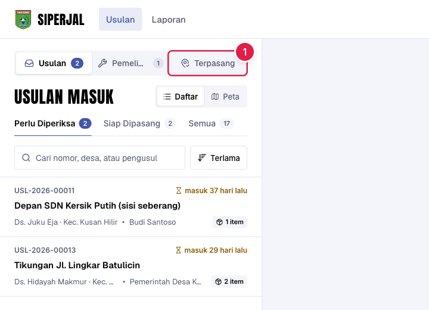
Semua perlengkapan terpasang: yang dari usulan SIPERJAL dan yang sebelum SIPERJAL. Saringan di kanan atas memisahkannya.
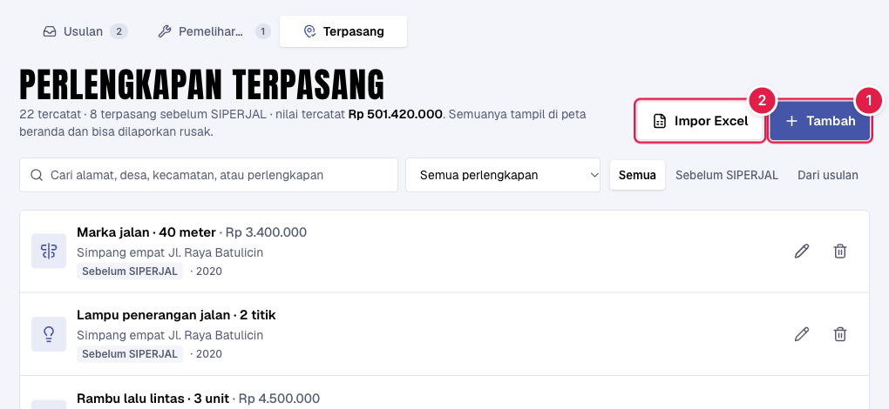
Di bawah tiap baris tampil harga SSH sekarang sebagai saran. Tidak dipakai otomatis, karena harga waktu pasang bisa berbeda.
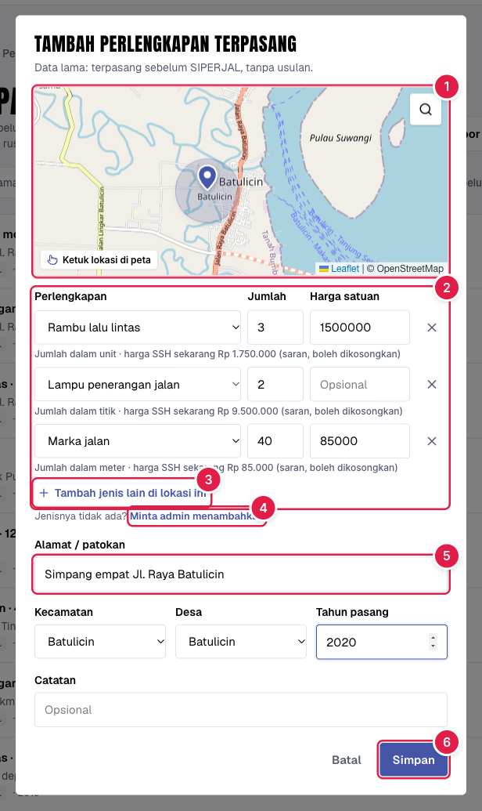
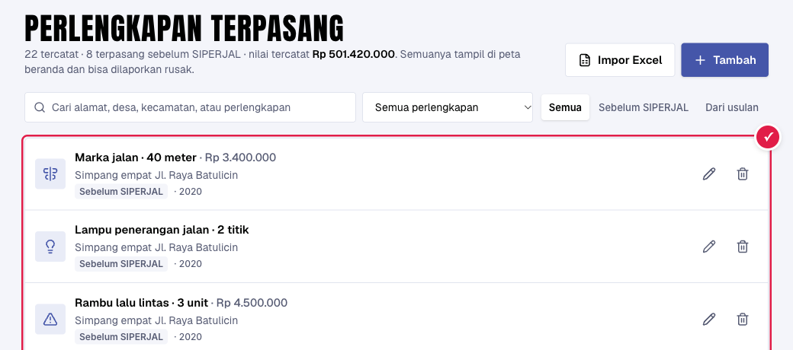
Jumlah × harga tampil di tiap baris; total nilai tercatat di bagian atas. Tanpa harga = tidak dihitung.
Klik ikon pensil untuk mengubah, ikon tempat sampah untuk menghapus.
bila sudah ada laporan kerusakan pada perlengkapan itu.
Sampai 2.000 baris per berkas. Lebih dari itu, pecah jadi beberapa berkas.
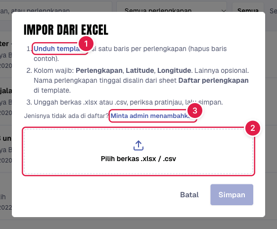
| A | B | C | D | E | F | G | H | I | J | |
|---|---|---|---|---|---|---|---|---|---|---|
| 1 | Perlengkapan | Jumlah | Harga satuan | Latitude | Longitude | Alamat | Kecamatan | Desa | Tahun | Catatan |
| 2 | Lampu penerangan jalan | 6 | 9500000 | -3.4521 | 116.0012 | Jl. Raya Batulicin km 2 | Batulicin | Batulicin | 2018 | PJU tiang tunggal |
| 3 | Pagar pengaman (guardrail) | 40 | 650000 | -3.4302 | 115.9948 | Tikungan Gunung Tinggi | Batulicin | Gunung Tinggi | 2020 | satuan meter |
| 4 | Patok tikungan (delineator) | 12 | -3.4610 | 116.0105 | Jl. Transmigrasi | 2021 |
Salin dari sheet Daftar perlengkapan (ada satuan & harga SSH-nya), tempel ke kolom A sheet Data.
Klik kanan titik di Google Maps (di HP: tekan lama), angka pertama = Latitude, kedua = Longitude.
Tulis namanya seperti di aplikasi. Boleh dikosongkan dan dilengkapi nanti lewat ikon pensil.
Kabar masuk ke lonceng & email, tombol Tambahkan membuka Pengaturan → Perlengkapan. Caranya ada di 2 slide berikut.
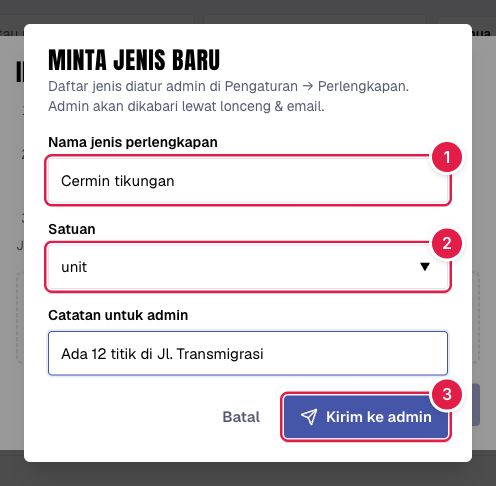
Ada permintaan dari Dishub? Klik kabarnya di lonceng → Tambahkan, halaman ini langsung terbuka.
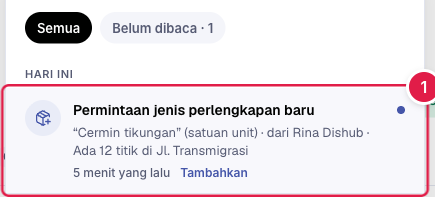
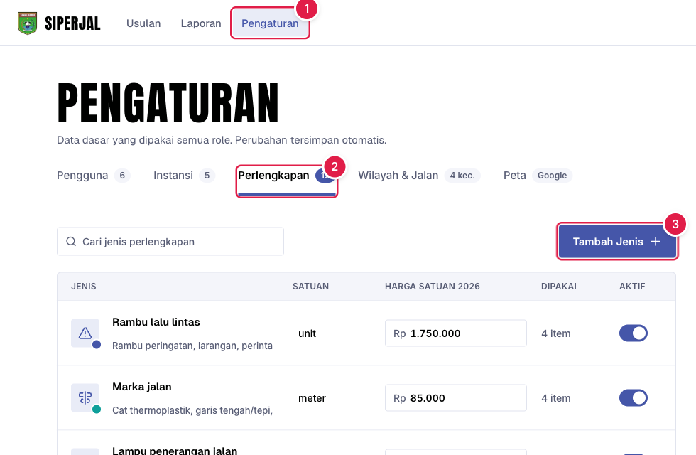
Nama, satuan, dan harga bisa diubah langsung di tabel (tersimpan otomatis). Matikan Aktif agar jenis tidak bisa diusulkan lagi; data terpasang lama tetap aman.
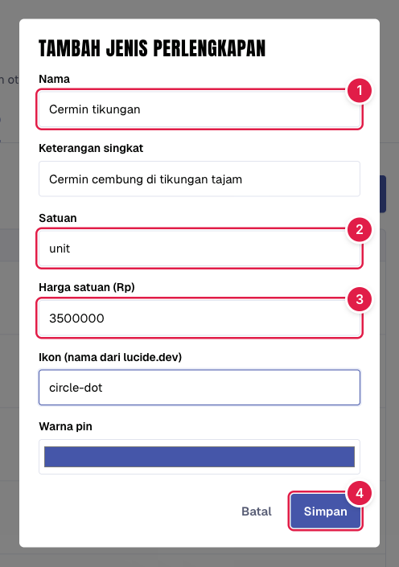
Perbaiki baris itu di Excel lalu unggah lagi. Baris yang sudah masuk otomatis dilewati, jadi tidak dobel.
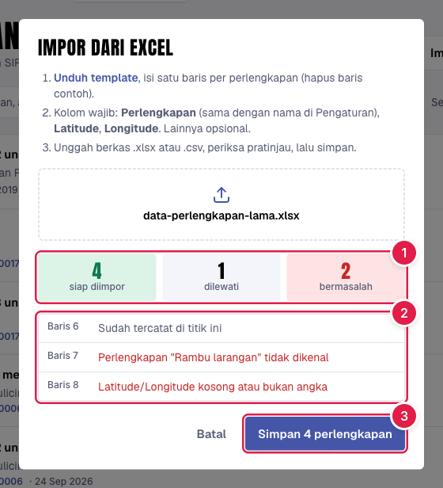
Klik Urungkan di pesan itu. Seluruh hasil impor tadi dihapus lagi.
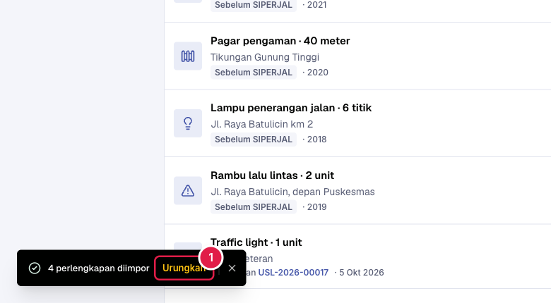
Saat ada usulan baru di dekat perlengkapan yang sudah ada, form usulan ikut menampilkannya, sehingga usulan dobel bisa dihindari.
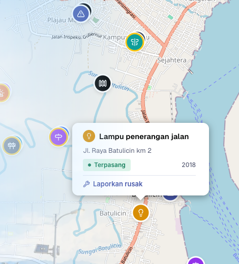